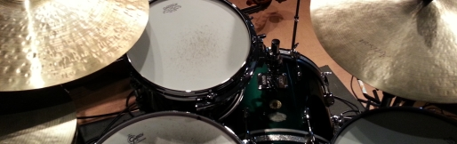

Profile
70年代半ばに
音楽活動を開始，'70年代末～'80年代初頭にかけ，“R-Grey”や“21(Twenty one)”などのロック／ポップ系バンドでライブ活動とともに各種コンテスト(Midland/LMC，POPCON，Fresh Sounds Contest等)に参加。共演者やソングライターに恵まれ，コンテストでは常に何らかの賞を受賞。POPCONでは中部地区代表として中部北陸大会まで出場。同時期，某コンテストでベストドラマー賞を取ったのをきっかけに営業ドラマーとしての誘いを受け，'80年代半ばまで愛知，岐阜，三重，静岡，長野，滋賀，大阪などでイベント演奏や歌手のバックバンド，ハコ等，様々な形態／ジャンルでの演奏活動を行うことになる。その後10年間近くのブランク後，'90年代半ばに 100%趣味として活動再開。最近は四日市市を拠点とし，Jazzを中心に Blues，Rock，Pops等のジャンルにも首を突っ込む（相変わらずの）横好きドラマーとして細く長く楽しんでいる。主な参加ユニットは
田中健二(g)カルテット(aka“The Groovin”)，伊藤麻祐子(p)トリオ等。他に単発ユニットでのライブ，セッションホスト等も。時々名古屋や四日市のジャムセッションに出没。（ライブ予定はこちら）約50年前の
初心者向けドラムセット Pearl“Valencia”(1974年製)を改造・修理しながら今も相棒にすることがあるのは，物を大切にする心…というよりは，軽くてコンパクトで意外に丈夫，そして独特のレトロ感から。ただ，枯れた音のよさはあるものの湿気にはめっぽう弱く，雨の日には極端に鳴りが悪くなる気分屋。他には，ポップス・ロック・ビッグバンド等にオールラウンドな Pearl GX “Giant Step”，廃品同様で入手した中古品をフルレストアし，SIXTY SIX (旧 Full House)に常置しているファイバー胴の Pearl PX “President”，１畳あればセッティング可能な「どこでもドラム」 PureCussion RIMS HeadSet，リーマン・ショックの円高(2008年)に乗じて個人輸入した銘器 Gretsch USA Custom などを愛用。詳細は“My Gear”へ。

Upcoming Gigs
2025年
【8月】
1(金) Bossa Nova Night wよろずやHEAVEN vol.157
20:00 SIXTY SIX/四日市
青木弦六(g)，Woody坂倉(b)，錦正佳・にしきよしみ(g,vo)
9(土) 305SP
青木弦六(g)，Woody坂倉(b)，錦正佳・にしきよしみ(g,vo)

20:30 VeeJay/四日市
美和子(vo)，小笠原岳海(g)，ヒゲベ(b)
15(金) 平井ひろ子と仲間たち・Eve サンローラン(「きなさい」ライブguest)
美和子(vo)，小笠原岳海(g)，ヒゲベ(b)
19:00 SIXTY SIX/四日市
平井ひろ子(p,ds)，平井英治尊(sax)，加藤"福ちゃん"加代子(p)，西野幹夫(g)，鈴木"Susie"晃代(b)，MAYU(vo)，古川祐次(b)，山際徹(uke)他
16(土) Yukico & 青木弦六trio
平井ひろ子(p,ds)，平井英治尊(sax)，加藤"福ちゃん"加代子(p)，西野幹夫(g)，鈴木"Susie"晃代(b)，MAYU(vo)，古川祐次(b)，山際徹(uke)他

20:30 VeeJay/四日市
Yukico(vo)，青木弦六(g)，土田邦雄(b)
20(水) 66 Session Vol.147
Yukico(vo)，青木弦六(g)，土田邦雄(b)

20:00 SIXTY SIX/四日市
森田純代(p)，土田邦夫(b)
22(金) Carrera Session Vol.85(79)
森田純代(p)，土田邦夫(b)

19:30 Carrera/鈴鹿
森田純代(p)，串原光星(b)
23(土) Ah-Un talk
森田純代(p)，串原光星(b)

Strega/名古屋
野坂美紀(g)，モロオカケイイチ(b)
31(日) 朗読Jazz
野坂美紀(g)，モロオカケイイチ(b)

19:00 Take Zero/四日市
若杉洋子(朗読)，坂倉琴子(p)，Woody坂倉(b)
若杉洋子(朗読)，坂倉琴子(p)，Woody坂倉(b)
【9月】
5(金) Bossa Nova Night w 森口ミカ vol.158
20:00 SIXTY SIX/四日市
青木弦六(g)，Woody坂倉(b)，森口ミカ(vo)
17(水) 66 Session Vol.148
青木弦六(g)，Woody坂倉(b)，森口ミカ(vo)

20:00 SIXTY SIX/四日市
森田純代(p)，土田邦夫(b)
23(火) にじいろこんさーと
森田純代(p)，土田邦夫(b)

14:00 川越あいあいホール/川越町
西村ヒロ(b)他
26(金) Carrera Session Vol.86(80)
西村ヒロ(b)他

19:30 Carrera/鈴鹿
石橋大輔(p)，串原光星(b)
27(土) はやみまき with 青木弦六Trio
石橋大輔(p)，串原光星(b)

20:30 VeeJay/四日市
はやみまき(vo)，青木弦六(g)，モロオカケイイチ(b)
はやみまき(vo)，青木弦六(g)，モロオカケイイチ(b)
J.A.
remmurd@clrlab.netLast update : Aug.01